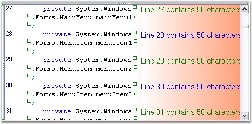

Edit Control supports the User Margin feature, which can be used to display additional information regarding the contents in the Edit Control. Information can also be displayed on a line-by-line basis.
The User Margin feature can be turned on by setting the ShowUserMargin property to True. The user margin can be customized using the following properties.
|
Edit Control Property |
Description |
|
UserMarginWidth |
Get / sets the width of the user margin. |
|
UserMarginPlacement |
Specifies placement of user margin. |
|
[C#]
this.editControl1.UserMarginWidth = 100;
// Sets the User Margin to the Left. this.editControl1.UserMarginPlacement = Syncfusion.Windows.Forms.Edit.Enums.MarginPlacement.Left; |
|
[VB.NET]
Me.editControl1.UserMarginWidth = 100
// Sets the User Margin to the Left. Me.editControl1.UserMarginPlacement = Syncfusion.Windows.Forms.Edit.Enums.MarginPlacement.Left |
Color Settings
The following properties can be used to set the background color, text color and border color of the user margin in the Edit Control.
|
Edit Control Property |
Description |
|
UserMarginBackgroundColor |
Specifies BrushInfo object that is used when the user margin is being drawn. |
|
UserMarginTextColor |
Specifies default color of user margin text. |
|
UserMarginBorderColor |
Specifies color of the user margin border. |
|
[C#]
this.editControl1.UserMarginBackgroundColor = new Syncfusion.Drawing.BrushInfo(Syncfusion.Drawing.GradientStyle.BackwardDiagonal, System.Drawing.Color.Brown, System.Drawing.Color.MistyRose); this.editControl1.UserMarginBorderColor = Color.IndianRed; this.editControl1.UserMarginTextColor = Color.Green; |
|
[VB.NET]
Me.editControl1.UserMarginBackgroundColor = New Syncfusion.Drawing.BrushInfo(Syncfusion.Drawing.GradientStyle.BackwardDiagonal, System.Drawing.Color.Brown, System.Drawing.Color.MistyRose) Me.editControl1.UserMarginBorderColor = Color.IndianRed Me.editControl1.UserMarginTextColor = Color.Green |

Figure 67: User Margin with Background Settings and Customized Text
It is possible to set custom text in the User Margin on a line-by-line basis by handling the DrawUserMarginText event of the Edit Control. Moreover, it is also possible to customize the font settings for the text of the User Margin.
|
[C#]
private void editControl1_DrawUserMarginText(object sender, Syncfusion.Windows.Forms.Edit.DrawUserMarginTextEventArgs e) { // Set text to be rendered at the user margin area. e.Text = "Line " + e.Line.LineIndex.ToString() + " contains " + e.Line.LineLength.ToString() + " characters"; // Set text font. e.Font = new Font("Garamond", 11); if(e.Line.LineIndex % 2 == 0) { // Set color of the text. e.Color = Color.Blue; } } |
|
[VB.NET]
Private Sub editControl1_DrawUserMarginText(ByVal sender As Object, ByVal e As Syncfusion.Windows.Forms.Edit.DrawUserMarginTextEventArgs) Handles EditControl1.DrawUserMarginText ' Set text to be rendered at the user margin area. e.Text = "Line " + e.Line.LineIndex.ToString() + " contains " + e.Line.LineLength.ToString() + " characters"
' Set text font. e.Font = New Font("Garamond", 11) If e.Line.LineIndex Mod 2 = 0 Then ' Set color of the text. e.Color = Color.Blue End If End Sub |
Refer to the User Margin Demo sample in the following sample installation location for more information in this regard.
..\My Documents\Syncfusion\EssentialStudio\Version Number\Windows\Edit.Windows\Samples\2.0\Advanced Editor Functions\UserMarginDemo